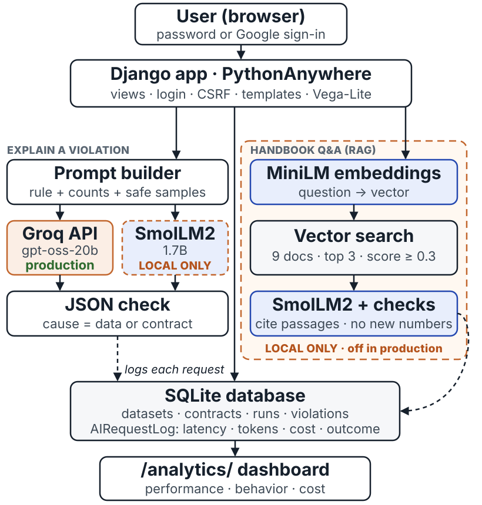
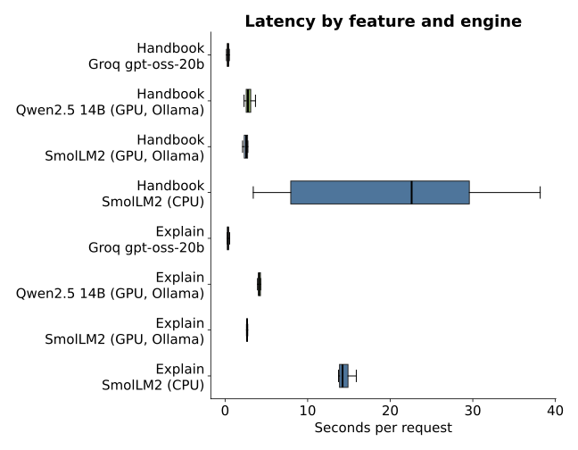
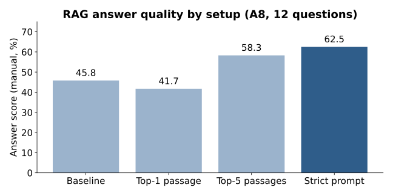
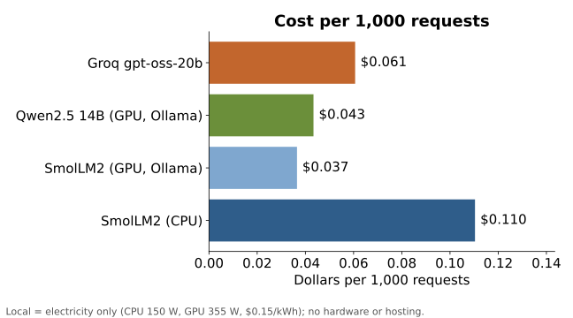
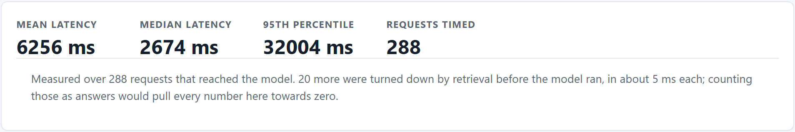

Know when your data breaks the rules, and why.
Hriday Agarwal (hda3@illinois.edu) · Ashok Chacko (achac@illinois.edu) · Tejas Jaggi (tejasj2@illinois.edu) · Connor Slattery (cslat@illinois.edu)
INFO 490: Advanced AI Web-Apps Development · Team 15 · Fall 2026




| Engine | Feature | Median | p95 | $ / 1,000 |
|---|---|---|---|---|
| Groq gpt-oss-20b | explain | 0.36 s | 0.50 s | $0.061 |
| SmolLM2 1.7B (GPU) | explain | 2.66 s | 2.74 s | $0.037 |
| Qwen2.5 14B (GPU) | explain | 4.11 s | 4.31 s | $0.043 |
| SmolLM2 1.7B (CPU) | explain | 14.23 s | 16.34 s | $0.110 |
| Groq gpt-oss-20b | handbook | 0.36 s | 0.66 s | $0.061 |
| SmolLM2 1.7B (GPU) | handbook | 2.55 s | 2.75 s | $0.037 |
| Qwen2.5 14B (GPU) | handbook | 2.77 s | 3.60 s | $0.043 |
| SmolLM2 1.7B (CPU) | handbook | 22.59 s* | 35.76 s | $0.110 |
308 benchmark requests (68 handbook + 9 explain per setup). Latency uses the 288 that reached a model; 20 handbook questions matched no passage and never did. $ / 1,000 is per setup, both features, all 308. *SmolLM2 on the CPU splits by reply length: short replies under 13 s, full answers over 22 s. In Django SmolLM2 runs on the CPU through transformers (no AMD GPU PyTorch on Windows); the GPU rows use Ollama, a different runtime. Local cost = electricity only (150 W CPU, 355 W GPU).
